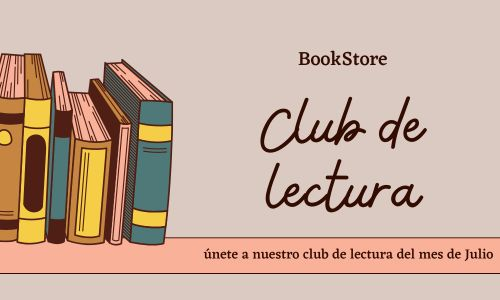

Libros clásicos que deberías leer 📖
Los clásicos han perdurado a lo largo de los siglos porque siguen ofreciendo algo valioso a los lectores. Son historias que han resistido el paso del tiempo y han sido reconocidas por generaciones de lectores. Leerlos te conecta con una tradición literaria que ha impactado a millones de personas en todo el mundo....
Leer másLibros imperdibles de ciencia ficción⭐
La ciencia ficción nos lleva a mundos y futuros imaginarios, nos permite pensar más allá de lo que conocemos y expandir nuestros horizontes. Te desafía a imaginar cómo podría ser el futuro de la humanidad, la tecnología, otros planetas, o cómo enfrentaríamos realidades desconocidas...
Leer másNovedades de Julio🎉
Por el mes de Julio, hemos seleccionado nuevas y emocionantes historias que merecen ser leídas. Ya sea que estés buscando la próxima gran novela para devorar, descubrir la obra de un autor emergente, o mantenerte al tanto de las novedades en tus géneros favoritos, aquí encontrarás lo más destacado de los lanzamientos editoriales recientes....
Leer más
¿Por qué leer la biblioteca de la medianoche?🌘
La biblioteca de la medianoche (2020) de Matt Haig.Es una novela que sigue a Nora Seed, una mujer que siente que su vida está llena de malas decisiones y arrepentimientos. Cuando llega a un punto de desesperación y se siente sin salida, Nora se encuentra en una misteriosa biblioteca...
Leer más
Club de lectura del mes de Julio📚
¡Bienvenidos al Club de Lectura! Estamos encantados de que te unas a nosotros en este espacio diseñado para los amantes de los libros, las grandes conversaciones y el crecimiento personal a través de la lectura...
Leer más
❤️Recomendaciones del mes de Julio🤍
Sumergirse en un buen libro es como abrir una ventana a nuevos mundos, ideas y perspectivas. Ya sea que busques una historia que te haga reflexionar, que te emocione o que te transporte a lugares lejanos, hay un libro perfecto para cada ocasión y estado de ánimo...
Leer más